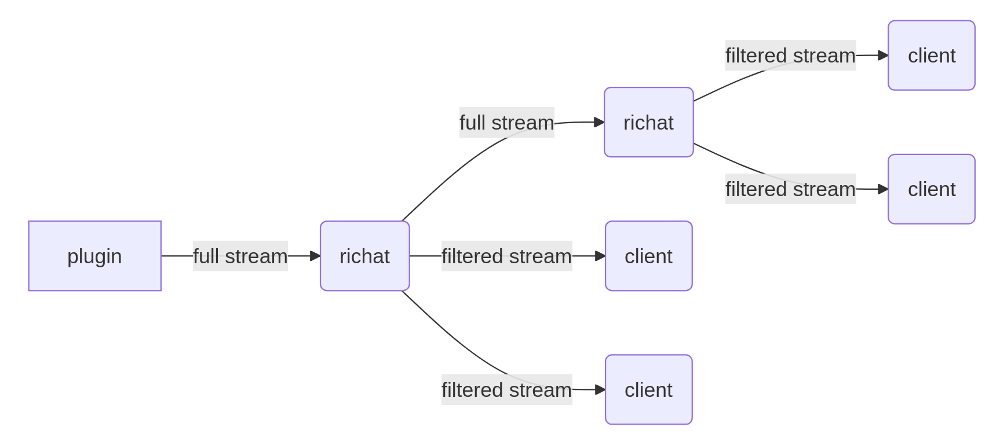

Agave RPC stack drop-in replacement (partial?)
Yellowstone gRPC / Dragon's Mouth by Triton One
We need to make a build for every Agave version
- Minor version change Rust version
- Minor version introduce interface changes
- Patch versions can contains backported breaking-changes (TransactionError case, solana#33351)
Yellowstone gRPC / Dragon's Mouth by Triton One
Hard to test and debug
- Testing and debugging only possible on the server with Agave node
- If plugin panic we need to restart the node
- We need to spin-up Agave node, but problem with server price / availability
- Hard to measure memory and CPU consumption
- Overloaded with filters and commitment levels
richat
- Lightweight plugin with processed commitment only and filters by message type
- In addition to gRPC, QUIC supports for streaming between continents

https://github.com/lamports-dev/richat
richat
- Allow full stream to be downstreamed
- Server with filters (fully compatiable with Yellowstone gRPC / Dragon's Mouth)
- Almost fully compatible implementation of Solana Pubsub (except for voteSubscribe, but with transactionSubscribe)
- Crates that allow building consumers with filters
- 5-10ms delay compare to Dragon's Mouth for full stream
- Possible additions: performant implementation for Jupiter?
https://github.com/lamports-dev/richat
alpamayo [wip]
- subscribe to the Geyser gRPC stream and use RPC in certain cases for dead slots
- store blocks in protobuf in files
- io-uring (with plans to use direct-io)
- ~30% faster response time compared to Agave without load
- ~3ms read time per block
- getTransaction with (offset,size)
https://github.com/lamports-dev/alpamayo
alpamayo [wip]
Possible improvements for getBlock:
- HTTP/2 + GET
- Protobuf encoding
Performance changes:
- 3ms read data
10ms parse protobuf120ms encode with options10ms serialization- change protobuf on the fly, 5ms?
- parse protobuf on client side, 10ms?
https://github.com/lamports-dev/alpamayo